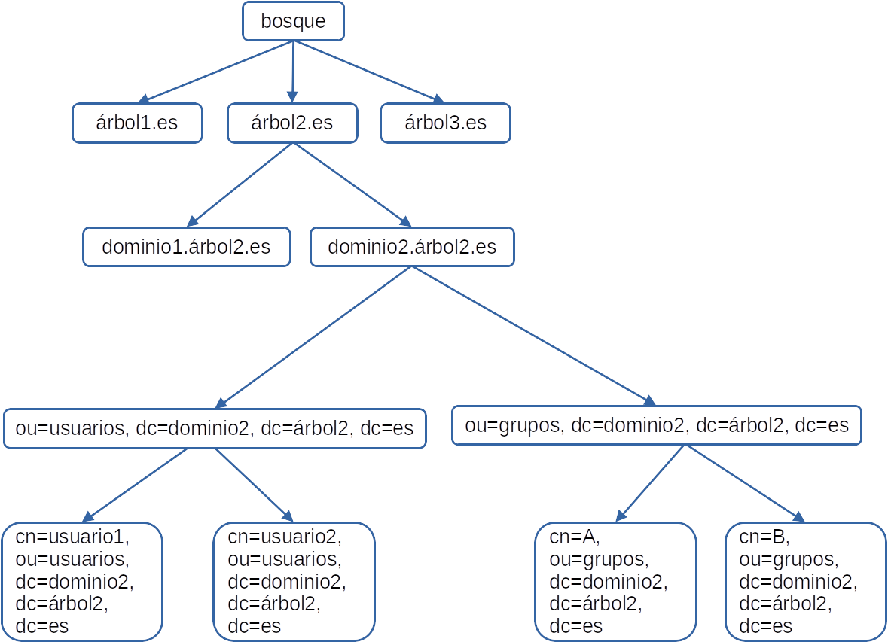

Active Directory Domain Services (AD DS)#
Active Directory#
El Directorio Activo (Active Directory en inglés) es el servicio de directorio utilizado en entornos de red de Microsoft Windows. Proporciona un conjunto de servicios de administración centralizada de recursos de red, como usuarios, grupos, equipos, impresoras y otros objetos, en un dominio de Windows.
A diferencia que en los grupos de trabajo, en lo que la administración de usuarios y privilegios se hará de forma individual en cada uno de los equipos que forman parte del grupo de trabajo, es decir cada uno de los equipos pertenecientes a un grupo de trabajo tienen una relación de igual a igual entre ellos y se administran de forma local, en el Directorio Activo se organiza jerárquicamente en los siguientes componentes:
Bosque (Forest): Es el nivel más alto en la estructura del Directorio Activo. Un bosque es una colección de uno o más dominios de Windows que comparten una relación de confianza mutua. Cada bosque tiene un nombre de dominio raíz y comparte una base de datos y una política de seguridad común.
Dominio (Domain): Un dominio es una unidad lógica en el Directorio Activo que agrupa objetos relacionados, como usuarios, grupos y recursos. Cada dominio tiene un nombre único dentro del bosque y se administra de forma independiente. Los dominios pueden tener relaciones de confianza con otros dominios dentro del mismo bosque.
Árbol (Tree): Un árbol es una colección de uno o más dominios que comparten una estructura de nombres contigua y una relación de confianza unidireccional. El primer dominio creado en un bosque se convierte en el dominio raíz, y los dominios adicionales se agregan como subdominios en forma de árbol.
Unidad Organizativa (Organizational Unit - OU): Una OU es una unidad organizativa que se utiliza para organizar y administrar los objetos del Directorio Activo, como usuarios, grupos y equipos. Las OUs se crean dentro de los dominios y permiten la delegación de administración y la aplicación de políticas específicas a grupos de objetos.
Objeto: Los objetos en el Directorio Activo representan recursos de red, como usuarios, grupos, equipos, impresoras, entre otros. Cada objeto tiene atributos que definen sus propiedades y características.
Contenedores Un contenedor es similar a una UO en términos de ser una entidad lógica utilizada para agrupar objetos relacionados dentro de un dominio de Active Directory, la principal diferencia radica en que las UOs proporcionan una estructura jerárquica para organizar y administrar objetos en un dominio de Active Directory, mientras que los contenedores son entidades más simples que se utilizan para agrupar objetos relacionados, pero sin las mismas capacidades de administración y delegación de tareas.
La estructura del Directorio Activo permite una administración eficiente de la red, al permitir la centralización de la administración de usuarios, recursos y políticas de seguridad. Además, facilita la implementación de políticas de grupo, la asignación de permisos y la gestión de la seguridad en toda la red.
Controlador de dominio#
El controlador de dominio es un componente clave del directorio activo (Active Directory) que proporciona servicios de autenticación y autorización a los usuarios y equipos en un dominio de Active Directory. También proporciona servicios de replicación de directorio a través de la red y mantiene una copia del directorio activo en sí.
Grupos#
Tipos de grupos
Los grupos de distribución sólo se pueden utilizar con aplicaciones de correo electrónico para enviar correo electrónico a grupos de usuarios. Los grupos de distribución no tienen habilitada la seguridad, lo que significa que no se pueden incluir en las listas de control de acceso.
Los grupos de seguridad se utilizan para controlar el acceso a los recursos de la red. Se pueden crear reglas de acceso a recursos, como carpetas compartidas o impresoras, y aplicarlas a un grupo de usuarios. Los usuarios que pertenecen al grupo tendrán acceso a los recursos permitidos por las reglas de acceso del grupo.
Ámbitos
Los grupos de ámbito universal: pueden incluir como miembros las cuentas de cualquier dominio del bosque, los grupos globales y los grupos universales. Además, al grupo se le puede asignar permisos en cualquier dominio.
Los grupos de ámbito global: pueden incluir como miembros las cuentas del mismo dominio y los grupos globales del mismo dominio. Además, se le puede asignar permisos en cualquier dominio.
Los grupos de ámbito de dominio local: pueden incluir como miembros cuentas de cualquier dominio, grupos globales, grupos universales y grupos locales de dominio pero sólo del mismo dominio que el grupo local de dominio principal. Además, los permisos de miembro sólo se pueden asignar en el mismo dominio que el grupo local de dominio principal.
Tipos de perfiles de usuario#
Como se ha podido deducir por lo dicho hasta ahora, existen diferentes tipos de perfiles de usuario que utilizaremos según las necesidades particulares de cada momento.
Entre los perfiles de usuario que podemos utilizar, se encuentran los siguientes:
Perfil de usuario local: Se guarda en el disco duro local del equipo cliente, de modo que todas las modificaciones que se realicen serán específicas del ordenador en el que se han establecido.
Perfil de usuario móvil: Los crea el administrador y se almacenan en una carpeta compartida por el servidor. Está asociada a la cuenta del dominio, de modo que estará disponible de forma independiente al ordenador concreto desde el que inicie sesión el usuario. Dado que el perfil se encuentra en el servidor, todos los cambios realizados en éste también se guardan en el servidor.
Perfil de usuario obligatorio: Podríamos decir que son perfiles móviles de sólo lectura, ya que solamente los administradores del dominio pueden realizar cambios en estos perfiles. De esta forma, el administrador podrá definir configuraciones para usuarios o grupos, y éstos no podrán cambiarlos.
Perfil de usuario temporal: Cuando se produce un error que impide cargar un perfil móvil o un perfil obligatorio, se crea un perfil temporal para facilitar el inicio de sesión del usuario. Cuando el usuario acaba su sesión, el perfil temporal se elimina y se pierden todas las modificaciones realizadas por el usuario en su entorno.
Perfil de usuario super-obligatorio: Este tipo de perfiles se incorpora a partir de Windows Server 2008 y su objetivo es similar al de los perfiles obligatorios, con la diferencia de que, si se produce un error que impida cargar el perfil, el usuario no podrá iniciar sesión. En otras palabras, un perfil de usuario super-obligatorio impedirá que se cargue un perfil temporal cuando exista algún motivo que impida la carga del perfil super-obligatorio.
Directiva de Grupo GPO#
Directiva de Grupo es una característica de Windows NT, familia de Sistemas Operativos. Directiva de grupo es un conjunto de reglas que controlan el entorno de trabajo de cuentas de usuario y cuentas de equipo. Directiva de grupo proporciona la gestión centralizada y configuración de sistemas operativos, aplicaciones y configuración de los usuarios en un entorno de Active Directory. En otras palabras, la Directiva de Grupo, en parte, controla lo que los usuarios pueden y no pueden hacer en un sistema informático
Las GPO se pueden diferenciar dependiendo del objeto al que configuran y se pueden entender en distintos niveles:
Equipo Local: tan solo se aplican en el equipo que las tiene asignadas independientemente del dominio al que pertenezca.
Sitio: se aplican a los equipos y/o usuarios de un sitio, independientemente del dominio.
Dominio: se aplican a todos los equipos y/o usuarios de un dominio.
Unidad Organizativa (OU): se aplican únicamente a los equipos y/o usuarios que pertenecen a la OU.
Recursos compartidos#
Los permisos NTFS en Windows se refieren a los permisos de archivos y carpetas que controlan el acceso de los usuarios a esos recursos en un sistema de archivos NTFS (Sistema de archivos Nuevo Tecnológico).
Nos determina que usuarios y grupos tienen acceso a determinados archivos y carpetas.
Objetivo es dar seguridad a los datos almacenados en los dispositivos de almacenamiento.
Marca a través de lista de control de acceso (ACL) los ficheros y carpetas
Las marcas y las restricciones las marca y las aplica el Núcleo del SO
ACL de los archivos#
Leer: Se puede leer el archivo y ver sus permisos, atributos y quién es su propietario.
Escribir: Es posible sobrescribir en el archivo. Ver al propietario y los permisos del archivo. Modificar sus atributos.
Lectura y Ejecución: Se pueden ejecutar aplicaciones e incluye el permiso Escribir obligatoriamente.
Modificar: Se puede modificar o eliminar el archivo, e incluye los permisos Escribir, y Lectura y ejecución.
Control Total: Puedes tomar la propiedad y modificar los permisos, e incluye todos los permisos anteriores.
ACL de una carpeta#
Leer: Permite ver archivos y subcarpetas dentro de la carpeta, ver los permisos y atributos de carpeta y saber quien es el propietario.
Escribir: Permite crear archivos y subcarpetas en la carpeta, modificar atributos de carpeta, ver el propietario y los permisos.
Listar el Contenido de la Carpeta: Ver los nombre de archivos y subcarpetas en la carpeta.
Lectura y Ejecución: Te puedes mover por las carpetas para llegar a leer otros archivos y carpetas donde en principio no tendrías permisos, además incluye los permisos de Leer y Listar el contenido de la carpeta.
Modificar: Puedes eliminar la carpeta e incluye los permiso de Escribir y Lectura y ejecución.
Control Total: Puedes modificar los permisos, tomar la propiedad, eliminar subcarpetas y archivos, y además tienes todos los permisos anteriores
Windows Deployment Services (WDS)#
Windows Deployment Services (WDS) es un servicio que nos permite, a través de un rol de Windows Server, cargar los ficheros de las imágenes de instalación de Windows en un servidor y lanzar una instalación desde el Network Boot PXE del ordenador.